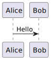

Description
For many tasks a diagram is required to illustrate a concept or process. This Quarto filter allows PlantUML diagrams to be created directly within Quarto documents. The filter supports both inline PlantUML code and loading PlantUML code from external .puml files.
Features
- Diagrams can be loaded from a file source.
- Diagrams can be created from inline PlantUML code.
- Renders the PlantUML diagram as SVG
- Renders puml files in the current directory.
Usage
To use the filter, include the following code block in your Quarto document:
File Source
N.B. The path to the puml file is relative to the location of the .qmd file being processed.
N.B. The plantuml script mush be stored in a file with a ‘.puml’ extension.
N.B. The pumlfile attribute must not include a file extension.
```{.plantuml pumlfile="diagram1"}
```Or for inline PlantUML code:
```{.plantuml}
@startuml
Alice -> Bob: Hello
@enduml
```Installation
To install the PlantUML Quarto filter, follow these steps:
- Have a working PlantUML installation. Instructions for installing PlantUML can be found at PlantUML Installation Guide.
- PlantUML must be accessible from the command line. Ensure that the PlantUML executable is in your system’s PATH.
- Ideally you should create a batch file to run plantuml, for example
plantuml.bat:
- Ideally you should create a batch file to run plantuml, for example
@echo off
java -jar "%~dp0plantuml-1.2025.7.jar" %*- Install the filter by using the Quarto add command:
quarto add newportg/plantuml-diagram- Add
diagramto thefiltersentry in the YAML header or quarto.yml file:
---
filters:
- plantuml-diagram
---Example
If enverything is setup correctly, the following code block:
```{.plantuml}
@startuml
Alice -> Bob: Hello
@enduml
```will render the following diagram:
